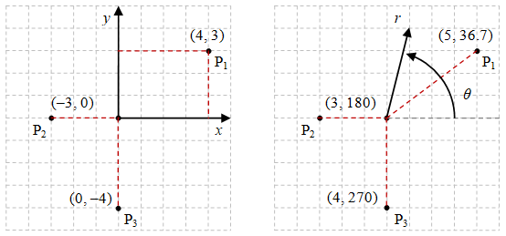
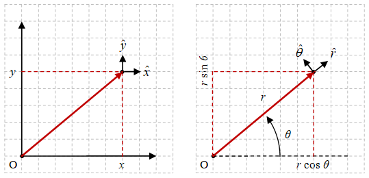

Koordinat polar dapat diperkenalkan dengan contoh pada kehidupan sehari-hari, di mana suatu tempat biasanya dirujuk dari posisi kita dan ke arah mana, misalnya $100 \ \rm km$ ke arah timur laut dari sini, dengan ini selain pemaknaan $r$ dan $\theta$ kerumitan lainnya belum perlu disampaikan [1]. Atau langsung dengan perumusannya akan tetapi masih menyembunyikan dimensi ketiganya, yang muncul saat perlu mendefinisikan perkalian silang dua buah vektor [2]. Mengaitkannya langsung dengan koordinat silinder merupakan alternatif lain, di mana simbol yang digunakan telah $\phi$ alih-alih $\theta$ [3], sehingga akan memudahkan transisi dari sistem koordinat 2d ke 3d. Dalam sistem koordinat polar ini fungsi untuk menggambarkan kurva-kurva akan memiliki bentuk berbeda dengan dalam sistem koordinat Kartesius [4].
Suatu ruang dibentuk oleh koordinat-koordinatnya [5]. Untuk ruang 2d dalam sistem koordinat Kartesius digunakan dua koordinat $x$ dan $y$, sedangkan dalam sistem koordinat polar digunakan koordinat $r$ dan $\theta$. Pasangan koordinat dari kedua sistem koordinat tersebut adalah sebagai berikut
\begin{equation}\label{eqn-polar-cs-r} r = \sqrt{x^2 + y^2}, \end{equation}
\begin{equation}\label{eqn-polar-cs-theta} \tan\theta = \frac{y}{x}, \end{equation}
dan
\begin{equation}\label{eqn-cartesian-cs-x} x = r \cos \theta \end{equation}
\begin{equation}\label{eqn-cartesian-cs-y} y = r \sin \theta. \end{equation}
Ilustrasi mengenai kedua pasang koordinat di atas diberikan pada gambar berikut ini.

Gambar 1. Terdapat titik-titik $\rm P_1$, $\rm P_2$, dan $\rm P_3$ yang digambarkan dalam koordinat Kartesius (kiri) dan polar (kanan).
Tiga titik, $\rm P_1$, $\rm P_2$, dan $\rm P_3$, diberikan pada Gambar 1, sebagai ilustrasi bagaimana titik $\rm P_1$ pada posisi sembarang, $\rm P_2$ pada sumbu $x$, dan $\rm P_3$ pada sumbu $y$ digambarkan dalam koordinat polar. Nilai $r$ selalu positif dan nilai $\theta$ diukur dari posisi sumbu $x+$ dengan arah putar melawan arah putar jarum jam atau counter clockwise (CCW).
Tabel 1. Contoht padanan nilai-nilai koordinat pada sistem koordinat Kartesius dan polar.
| Titik | $x$ | $y$ | $r$ | $\theta$ |
|---|---|---|---|---|
| $\rm P_1$ | $4$ | $3$ | $5$ | $36.7$ |
| $\rm P_2$ | $-3$ | $0$ | $3$ | $180$ |
| $\rm P_3$ | $0$ | $-4$ | $4$ | $270$ |
Nilai sudut pada Tabel 1 dan Gambar 1 dinyatakan dalam derajat ($^\circ$) yang dapat pula dinyatakan dalam radian ($\rm rad$).
Suatu vektor $\vec{r}$ digambarkan dengan panah, di mana panjang panah merupakan besar vektor $r$ dan ke mana vektor menunjuk merupakan arah vektor $\theta$. Secara umum vektor dapat diuraikan dalam komponen-komponennya yang arah masing-masing komponen ditandai dengan suatu vektor satuan dengan notasi topi atau hat $\hat{}$. Dalam koordinat Kartesius sebuah vektor $\vec{c}$
\begin{equation}\label{eqn-cartesian-cs-vector} \vec{c} = c_x \ \hat{x} + c_y \ \hat{y} \end{equation}
dengan kompononen-komponennya pada arah $x$ dan $y$ dan dalam koordinat polar
\begin{equation}\label{eqn-polar-cs-vector} \vec{c} = c_r \ \hat{r} + c_\theta \ \hat{\theta} \end{equation}
dengan kompononen-komponennya pada arah $r$ dan $\theta$.

Gambar 2. Suatu vektor posisi $\vec{r}$ digambarkan dalam koordinat Kartesius (kiri) dan polar (kanan).
Vektor posisi $\vec{r}$ memiliki kekhususan bahwa komponennya hanya pada arah radial dengan vektor satuan $\hat{r}$ dalam koordinat polar, seperti diilustrasikan pada Gambar 2 (kanan). Selanjutnya dapat dituliskan bahwa suatu vektor posisi
\[\begin{array}{rcl} \vec{r} & = & r \ \hat{r}, \newline \vec{r} & = & x \ \hat{x} + y \ \hat{y} \newline & = & r \cos\theta \ \hat{x} + r \sin\theta \ \hat{y}, \end{array}\]sehingga dapat diperoleh Persamaan \eqref{eqn-cartesian-cs-x} dan \eqref{eqn-cartesian-cs-y}. Vektor satuan pada arah radial diperoleh melalui
\begin{equation}\label{eqn-polar-cs-unit-vector-r} \begin{array}{rcl} \hat{r} & = & \displaystyle \frac{\vec{r}}{r} \newline & = & \displaystyle{r \cos\theta \ \hat{x} + r \sin\theta \ \hat{y}}{r} \newline & = & \cos\theta \ \hat{x} + \sin\theta \ \hat{y}, \end{array} \end{equation}
Kemudian dari Gambar 2 terlihat bahwa $\hat{\theta}$ selalu tegak lurus $\hat{r}$ sehingga
\begin{equation}\label{eqn-polar-cs-unit-vector-theta} \begin{array}{rcl} \hat{\theta} & = & \hat{r}(\theta+\frac12\pi) \newline & = & \cos(\theta+\frac12\pi) \ \hat{x} + \sin(\theta+\frac12\pi) \ \hat{y}, \newline & = & -\sin \theta \ \hat{x} + \cos \theta \ \hat{y}. \end{array} \end{equation}
Operasi perkalian titik berikut,
\begin{equation}\label{eqn-polar-cs-unit-vector-r-theta-perp} \begin{array}{rcl} \hat{r} \cdot \hat{\theta} & = & (\cos\theta \ \hat{x} + \sin\theta \ \hat{y}) \cdot (-\sin \theta \ \hat{x} + \cos \theta \ \hat{y}) \newline & = & -\cos \theta \sin \theta + \sin \theta \cos \theta \newline & = & 0, \end{array} \end{equation}
menunjukkan bahwa $\hat{r} \perp \hat{\theta}$.
Dalam sistem koordinat Kartesius turunan terhadap waktu untuk $\hat{x}$ dan $\hat{y}$ adalah nol, akan tetapi tidak demikian dalam sistem koordinat polar. Untuk mempersingkat penulisan notasi
\begin{equation}\label{eqn-time-derivative-notation} \dot{g} \equiv \frac{dg}{dt} \end{equation}
akan digunakan. Selanjutnya, untuk vektor satuan pada arah radial
\begin{equation}\label{eqn-polar-cs-unit-vector-r-dot} \begin{array}{rcl} \dot{\hat{r}} & = & -\dot{\theta} \sin\theta \ \hat{x} + \dot{\theta} \cos\theta \ \hat{y} \newline & = & \dot{\theta} (-\sin \theta \ \hat{x} + \cos \theta \ \hat{y}) \newline & = & \dot{\theta} \hat{\theta} \end{array} \end{equation}
dan untuk arah angular
\begin{equation}\label{eqn-polar-cs-unit-vector-theta-dot} \begin{array}{rcl} \dot{\hat{\theta}} & = & -\dot{\theta} \cos\theta \ \hat{x} - \dot{\theta} \sin\theta \ \hat{y} \newline & = & -\dot{\theta} (\cos\theta \ \hat{x} + \sin\theta \ \hat{y}) \newline & = & -\dot{\theta} \hat{r}. \end{array} \end{equation}
Perhatikan bahwa turunan terhadap waktu dari satu vektor satuan terkait dengan vektor satuan lainnya. Persamaan \eqref{eqn-polar-cs-unit-vector-r-dot} dan \eqref{eqn-polar-cs-unit-vector-theta-dot} diperlukan karena adanya hubungan
\begin{equation}\label{eqn-v=drdt} \vec{v} = \frac{d\vec{r}}{dt}, \end{equation}
\begin{equation}\label{eqn-a=dvdt} \vec{a} = \frac{d\vec{v}}{dt}, \end{equation}
antara variabel-variabel kinematika.
Variabel kinematika seperti posisi, kecepatan, dan percepatan [6], terhubung melalui diferensial satu dengan lainnya, yang dalam sistem koordinat polar tidak sesederhana seperti dalam koordinat Kartesius. Hal ini dikarenakan vektor satuannya tidak tetap terhadap waktu, sehingga turunannya terhadap waktu tidak nol, seperti telah diberikan oleh Persamaan \eqref{eqn-polar-cs-unit-vector-r-dot} dan \eqref{eqn-polar-cs-unit-vector-theta-dot}.
Seperti telah diberikan pada Gambar 2
\begin{equation}\label{eqn-polar-cs-position} \vec{r} = r \ \hat{r} \end{equation}
adalah vektor posisi dalam koordinat polar.
Dengan menerapan Persamaan \eqref{eqn-v=drdt} pada Persamaan \eqref{eqn-polar-cs-position} menggunakan Persamaan \eqref{eqn-polar-cs-unit-vector-r-dot} dan \eqref{eqn-polar-cs-unit-vector-theta-dot} akan diperoleh
\begin{equation}\label{eqn-polar-cs-velocity} \begin{array}{rcl} \vec{v} & = & \dot{\vec{r} } \newline & = & \dot{r} \ \hat{r} + r \ \dot{\hat{r}} \newline & = & \dot{r} \ \hat{r} + r \dot{\theta} \ \hat{\theta}, \end{array} \end{equation}
di mana suku pertama di ruas kanan merupakan kecepatan pada arah radial $v_r = \dot{r}$ dan suku kedua merupakan kecepatan pada arah angular $v_\theta = r\dot{\theta}$.
Kembali menggunakan Persamaan \eqref{eqn-polar-cs-unit-vector-r-dot} dan \eqref{eqn-polar-cs-unit-vector-theta-dot} saat menerapkan Persamaan \eqref{eqn-a=dvdt} pada Persamaan \eqref{eqn-polar-cs-velocity} akan memberikan
\begin{equation}\label{eqn-polar-cs-acceleration} \begin{array}{rcl} \vec{a} & = & \dot{\vec{v} } \newline & = & \ddot{r} \ \hat{r} + \dot{r} \ \dot{\hat{r}} + \dot{r} \dot{\theta} \ \hat{\theta} + r \ddot{\theta} \ \hat{\theta} + r \dot{\theta} \ \dot{\hat{\theta}} \newline & = & \ddot{r} \ \hat{r} + \dot{r} \dot{\theta} \ \hat{\theta} + \dot{r} \dot{\theta} \ \hat{\theta} + r \ddot{\theta} \ \hat{\theta} + r \dot{\theta} \ (-\dot{\theta} \ \hat{r}) \newline \newline & = & \left( \ddot{r} - r \dot{\theta}^2 \right) \ \hat{r} + \left( r\ddot{\theta} + 2\dot{r}\dot{\theta} \right) \ \hat{\theta}, \end{array} \end{equation}
yang merupakan ungkapan percepatan dalam koordinat polar.
Penerapan sistem koordinat polar dapat dilakukan pada berbagai permasalahan, salah satunya adalah pada gerak melingkar, di mana di dalamnya termasuk gerak melingkar beraturan (GMB) dan gerak melingkar berubah beraturan (GMBB). Jenis gerak pertama memiliki percepatan sudut $\alpha = 0$, sedangkan pada jenis gerak yang kedua $\alpha \ne 0$.
Pada suatu gerak melingkar benda bergerak mengikuti lintasan berbentuk lingkaran berjari-jari tertentu, misalnya $r = R$, yang bernilai tetap. Dengan demikian Persamaan \eqref{eqn-polar-cs-position} akan menjadi
\begin{equation}\label{eqn-polar-cs-position-ucm} \vec{r} = R \ \hat{r}, \end{equation}
Persamaan \eqref{eqn-polar-cs-velocity} akan menjadi
\begin{equation}\label{eqn-polar-cs-velocity-ucm} \vec{v} = R \dot{\theta} \ \hat{\theta}, \end{equation}
dan Persamaan \eqref{eqn-polar-cs-acceleration} akan menjadi
\begin{equation}\label{eqn-polar-cs-acceleration-ucm} \vec{a} = -R \dot{\theta}^2 \ \hat{r} + R \ddot{\theta} \ \hat{\theta}. \end{equation}
Dengan menggunakan notasi $\omega = \dot{\theta}$ dan menuliskan besarnya saja Persamaan \eqref{eqn-polar-cs-velocity-ucm} akan memberikan
\begin{equation}\label{eqn-polar-cs-velocity-ucm-tangential} v_T = R \omega, \end{equation}
yang merupakan kecepatan tangensial. Dan dengan tambahan $\alpha = \ddot{\theta}$ diperoleh
\begin{equation}\label{eqn-polar-cs-acceleration-ucm-total} \vec{a} = -R \omega^2 \ \hat{r} + R \alpha \ \hat{\theta}, \end{equation}
di mana
\begin{equation}\label{eqn-polar-cs-acceleration-ucm-tangential} a_T = R \alpha, \end{equation}
yang merupakan percepatan tangensial dan
\begin{equation}\label{eqn-polar-cs-acceleration-ucm-centripetal} a_C = -R \omega^2 = - \frac{v_T^2}{R}, \end{equation}
yang adalah percepatan sentripetal, dengan tanda negatif berarti percepatan menuju ke pusat. Persamaan \eqref{eqn-polar-cs-acceleration-ucm-centripetal} telah menggunakan Persamaan \eqref{eqn-polar-cs-velocity-ucm-tangential}.